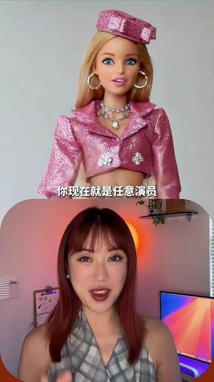
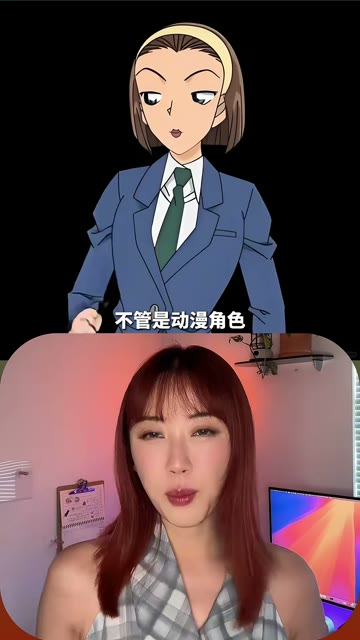
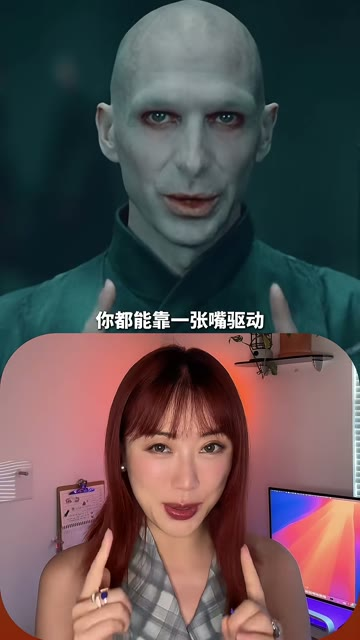
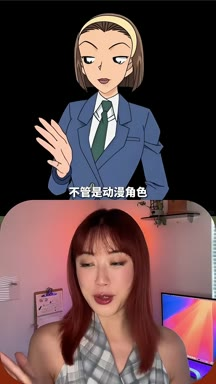
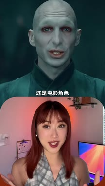
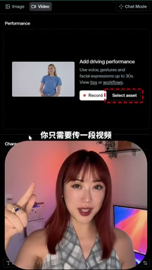
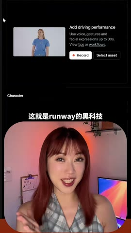

01钩子 / 问题
先让观众成为熟悉角色
开场宣称演员的天塌了，并连续展示动漫与电影角色被真人口型和动作驱动。观众先看见魔法，再听工具名。
只需上传一段表演视频和一张角色图，就能迁移口型、动作和表情，快速生成角色表演。
视频先展示赫敏、芭比、伏地魔等可识别结果，再给出工具和基本输入方式。熟悉角色降低了理解成本，但也带来 IP 和商用风险。
只需上传一段表演视频和一张角色图，就能迁移口型、动作和表情，快速生成角色表演。
不是复述内容，而是标出每一段承担的叙事任务、观众问题和画面证据。
开场宣称演员的天塌了，并连续展示动漫与电影角色被真人口型和动作驱动。观众先看见魔法，再听工具名。
她给出 Runway Act One 的基本工作流：上传表演视频，再提供一张目标角色图，等待生成。
结尾继续展示换表情、改动作和变风格，强调简单自然语言也能参与角色编辑。
下列章节覆盖视频的主要论点、步骤与结果；每段都保留时间码和关键画面。

开场宣称演员的天塌了，并连续展示动漫与电影角色被真人口型和动作驱动。观众先看见魔法，再听工具名。
她给出 Runway Act One 的基本工作流：上传表演视频，再提供一张目标角色图，等待生成。
结尾继续展示换表情、改动作和变风格，强调简单自然语言也能参与角色编辑。


短视频每 1 秒、常规视频每 2 秒、超长视频每 3 秒取一帧。



小红书官方 zh-CN 字幕 · 5 段 · 139 字。字幕只记录声音；工具名、界面文字和结果含义必须结合上方视觉知识地图复核。
演员的天塌了，你现在就是任意演员，不管是动漫角色还是电影角色
你都能靠一张嘴驱动，口型和动作都能同步

这就是runway的黑科技act one
你只需要上传一段视频，再贴一张你想祛痘的图，几分钟就能让土里的人活过来
你可以用一句话就可以批图改图，比如给图片换表情，改动作，变风格都超级简单
公开视频展示了成功案例，不能证明不同角色、镜头和口型下的稳定成功率；知名影视角色涉及版权和商用限制。
打开小红书原帖 ↗